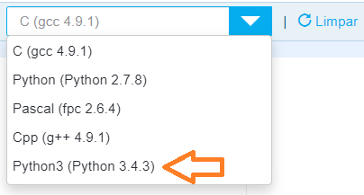

Atividade 8 - The Huxley
Revisão
Material de apoio para a disciplina Linguagem de Programação da UACSA/UFRPE
Produzido pelo prof. João Pimentel
A "boa not√≠cia" √© que esta atividade 8 não inclui o assunto da semana 8 üòÖ
Ah, como sempre, construa seu programa aos poucos e vá testando com o repl.it, antes de enviar a sua resposta para o Huxley. Assim fica mais fácil encontrar os erros √† medida que eles aparecerem üòé
Você quer as dicas para qual problema?
Este problema não precisa de repetição (for ou while). O que a gente precisa é descobrir se o número digitado atende a todas essas condições:
- é divisível por 4
- é divisível por 7
- e não é divisível por 5
SAÍDA: a saída é "sim" ou "nao" (sem acento!)
Este problema não precisa de repetição (for ou while).
DICA: para calcular porcentagem em Python a gente não usa o %.
SAÍDA: note que não é preciso arredondar o resultado
Lembra daquele somatório que a gente fez em uma das lives? Pronto, dá para resolver este problema com o mesmo raciocínio, usando algum comando de repetição.
DICA: range
Este problema não precisa de repetição (for ou while).
Se liga que o teto do salário é 5839.45. Qualquer salário maior que esse (oh Glória!) vai pagar o mesmo valor: 11% de 5839.45.
SAÍDA: é preciso arredondar o resultado para duas casas decimais
DICA: para calcular porcentagem em Python a gente não usa o %.
Juro a você: esse problema é bem mais simples do que parece. Juro!
Não precisa usar for, while, listas, nem if. É "só" fazer umas continhas.
DICA: assunto da semana 1.
Sabe quando você passa horas ganhando XP para passar de um chefe? Se você encarar como uma obrigação pra se livrar rapidamente, é um tormento. Se encarar como um desafio, quando conseguir vai ficar feliz quanto fica quando vence no Fortnite, Fall Guys ou Tetris 99.
ENTRADA: a entrada sempre vai ter 7 números inteiros.
SAÍDA:
A primeira resposta é: dos 7 dias, em quanto deles o carteiro bateu a meta?
A segunda resposta é: qual a média do número de cartas entregues pelo carteiro?
DICA: somatório (acumulador).
Quando o Huxley diz que a resposta está errada quer dizer que, em alguns casos, o resultado do seu código não bateu com o gabarito. Se lembre de olhar a parte de baixo da tela para saber quais casos de teste estão errados e aperte nos X para ver se tem alguma dica disponível.

Lembre-se de escolher a opção Python 3 quando for escrever a resposta no The Huxley.
